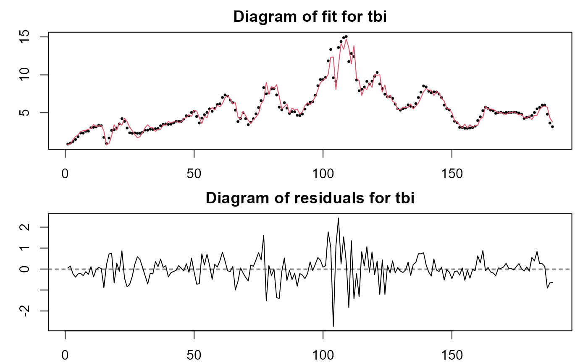

Fits a time-varying coefficients vector autorregressive model with p lags.
tvVAR( y, p = 1, z = NULL, ez = NULL, bw = NULL, cv.block = 0, type = c("const", "none"), exogen = NULL, est = c("lc", "ll"), tkernel = c("Triweight", "Epa", "Gaussian"), singular.ok = TRUE )
| y | A matrix with dimention obs x neq (obs = number of observations and neq = number of equations) |
|---|---|
| p | A scalar indicating the number of lags in the model |
| z | A vector containing the smoothing variable. |
| ez | (optional) A scalar or vector with the smoothing estimation values. If
values are included then the vector |
| bw | An optional scalar or vector of length the number of equations. It represents the bandwidth in the estimation of trend coefficients. If NULL, it is selected by cross validation. |
| cv.block | A positive scalar with the size of the block in leave one block out cross-validation. By default 'cv.block = 0' meaning leave one out cross-validation. |
| type | A character 'const' if the model contains an intercept and 'none' otherwise. |
| exogen | A matrix or data.frame with the exogenous variables (optional) |
| est | The nonparametric estimation method, one of "lc" (default) for linear constant or "ll" for local linear. |
| tkernel | A character, either "Triweight" (default), "Epa" or "Gaussian" kernel function. |
| singular.ok | Logical. If FALSE, a singular model is an error. |
An object of class 'tvvar'
The object of class tvvar have the following components:
An array of dimension obs x neq (obs = number of observations, neq = number of equations in the system) with the time-varying coefficients estimates.
The fitted values.
Estimation residuals.
A list with the regressors data and the dependent variable.
A matrix with the dependent variable data.
A vector with the smoothing variable.
A vector with the smoothing estimation values.
Bandwidth of mean estimation.
Whether the model has a constant or not.
A matrix or data.frame with other exogenous variables.
Number of lags
Number of equations
Number of observations in estimation.
Number of observations in the original set.
Matched call.
Casas, I., Ferreira, E., and Orbe, S. (2017) Time-Varying Coefficient Estimation in SURE Models: Application to Portfolio Management. Available at SSRN: https://ssrn.com/abstract=3043137
Primiceri, G.E. (2005) Time varying structural vector autoregressions and monetary policy. Review of Economic Studies, 72, 821-852.
##Inflation rate, unemployment rate and treasury bill interest rate for ##the US, as used in Primiceri (2005). data(usmacro, package = "bvarsv") VAR.fit <- vars::VAR(usmacro, p = 6, type = "const") tvVAR.fit <- tvVAR(usmacro, p = 6, type = "const", bw = c(1.8, 20, 20)) plot(tvVAR.fit)